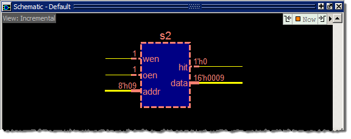
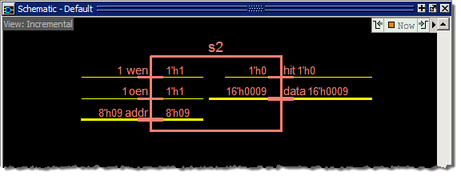
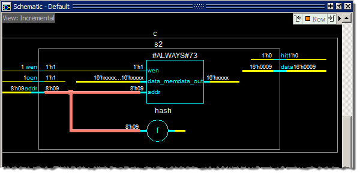
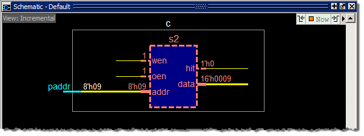

Contents
of complex instances are folded (hidden) in the Incremental view
to maximize screen space and improve the readability of the schematic.
Procedure
- Display
a folded instance in the Incremental view of the schematic.
- Expand the
hierarchy of the c module in the Structure
window.
- Drag the s2 module
instance (in the c module) from the Structure
window to the Schematic.
Figure 1. Folded Instance
The folded
instance is indicated by a dark blue square with dashed borders
(Figure 1). When you hover the mouse cursor over
a folded instance, the tooltip (text box popup) will show that it
is **FOLDED**.
- Unfold the
folded instance.
- Right-click
inside the folded instance to open a popup menu.
- Select Fold/Unfold to
unfold the instance as shown in Figure 2.
Figure 2. Unfolded Instance
Since we
have not traced any signals into the folded instance (we simply
dragged it into the Incremental view), we cannot see the contents
of the s2 instance.
- Display
the contents of the s2 instance.
- Double-click
the addr net inside the s2 instance
to cause the connected gates and internal instances to appear (Figure 3).
Figure 3. Contents of Unfolded
Instance s2
- Fold instance s2.
- Left-click
the s2 instance border so it is highlighted.
- Right-click
to open the popup menu and select Fold/Unfold to
fold the instance.
Figure 4. Instance s2 Refolded
- Experiment
with other folded instances (s0, s1, s3). When you are finished,
use the Delete Content button to clear the
schematic.